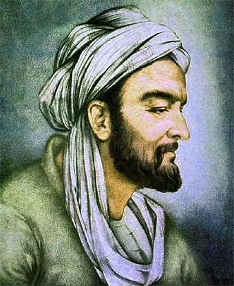
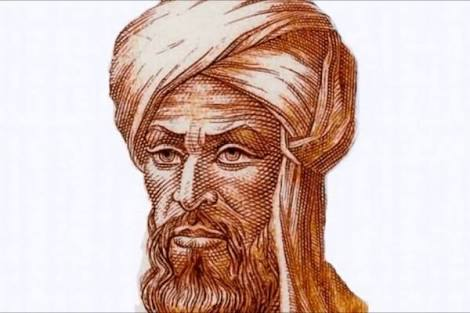

Baca selengkapnya >>>>>>
FAKTA IBNU SINA
Profile singkat IBNU SINA
Ibnu Sina dikenal juga sebagai "Avicenna" di dunia Barat adalah seorang filsuf, ilmuwan, dan dokter kelahiran Persia....Baca selengkapnya >>>>>>

Baca selengkapnya >>>>>>
AL-KHAWARIZMI
Ilmuan ISLAM Penemu Angka Nol dan Algorithma
Muḥammad bin Mūsā al-Khawārizmī adalah seorang ahli dalam bidang matematika, astronomi, astrologi, dan geografi yang berasal dari Persia....Baca selengkapnya >>>>>>

Profile Anggota
Muhammad Asyrov Illahi
Nizal Akhmad Muzakki
Klik "Tentang Saya" jika ingin melihat lebih serius
Baca selengkapnya di GooGle >>>>>>